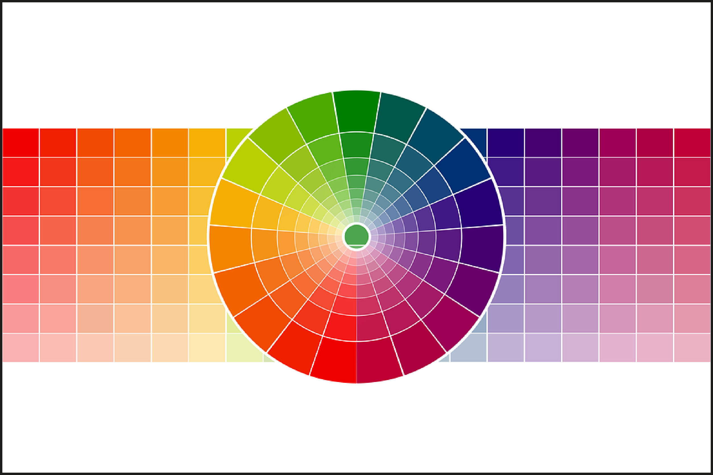

Colores en la web.
Ideas principales:
Colores en la web:
Tipos de Colores Usados en la Web:- keywords: red, blue, green, etc.
- Hexadecimal: #ff0000.
- RGB: Rojo, Verde, Azul.
- RGBA: Alpha.
- HSL: matiz, saturación, luminosidad.
- HSLA: Alpha.
- Identificar al público objetivo.
- asociaciones culturales.
- armonía del color.
- contraste.
- impacto visual.
Apuntes de clase:
Colores en la web: Existen diferentes tipos de estándares de colores usados en la web, que le suman más variedad de colores al diseño.
Tipos de Colores Usados en la Web:- keywords: Colores predefinidos como red, blue, green, etc.
- Hexadecimal: Colores representados con un código de 6 caracteres precedido por #, como #ff0000.
- RGB: Colores definidos por los valores de Rojo (Red), Verde (Green) y Azul (Blue), con un rango de 0 a 255.
- RGBA: Similar a RGB, pero con un valor adicional de opacidad (Alpha), donde 1 es opaco y 0 es transparente.
- HSL: Definidos por matiz (Hue), saturación (Saturation) y luminosidad (Lightness).
- HSLA: Similar a HSL, pero con un valor adicional de opacidad (Alpha).
- Identificar al público objetivo.
- Tener cuidado con las asociaciones culturales.
- Tener en cuenta la armonía del color.
- Tomar en cuenta el contraste.
- Y el impacto visual que tendrá el usuario.

Resumen de la clase:
Colores en la web: Existen diversos estándares de colores usados en el diseño web, como keywords, Hexadecimal, RGB, RGBA, HSL y HSLA, cada uno con sus características. Es importante considerar factores como la identificación del público, armonía, contraste, y el impacto visual para un diseño efectivo.